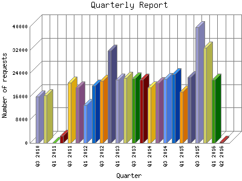

Analog 5.24
Analog 5.24 Report Magic for Analog 2.13
Report Magic for Analog 2.13The Quarterly Report shows total activity on your site for each quarter of a
year. Remember that each page hit can result in several server requests as the
images for each page are loaded.
Note: Most likely, the first and
last quarters will not represent a complete quarter's worth of data, resulting
in lower hits.

| Quarter | Number of requests | Percentage of the requests | |
|---|---|---|---|
| 1. | Q2 2016 | 509 | 0.10% |
| 2. | Q1 2016 | 21,850 | 4.67% |
| 3. | Q4 2015 | 32,736 | 6.99% |
| 4. | Q3 2015 | 39,811 | 8.50% |
| 5. | Q2 2015 | 22,596 | 4.82% |
| 6. | Q1 2015 | 17,538 | 3.74% |
| 7. | Q4 2014 | 23,639 | 5.4% |
| 8. | Q3 2014 | 21,904 | 4.68% |
| 9. | Q2 2014 | 20,515 | 4.38% |
| 10. | Q1 2014 | 18,972 | 4.4% |
| 11. | Q4 2013 | 21,812 | 4.66% |
| 12. | Q3 2013 | 22,211 | 4.73% |
| 13. | Q2 2013 | 22,328 | 4.77% |
| 14. | Q1 2013 | 21,745 | 4.64% |
| 15. | Q4 2012 | 31,799 | 6.79% |
| 16. | Q3 2012 | 21,335 | 4.56% |
| 17. | Q2 2012 | 19,641 | 4.20% |
| 18. | Q1 2012 | 13,018 | 2.78% |
| 19. | Q4 2011 | 19,120 | 4.9% |
| 20. | Q3 2011 | 20,785 | 4.43% |
| 21. | Q2 2011 | 2,457 | 0.52% |
| 22. | Q1 2011 | 0 | 0% |
| 23. | Q4 2010 | 16,385 | 3.50% |
| 24. | Q3 2010 | 15,939 | 3.40% |
Most active quarter Q3 2015 : 39,811 requests handled.
Quarterly average: 20375 requests handled.
This report was generated on April 3, 2016 02:21.
Report time frame August 10, 2010 08:36 to April 3, 2016 04:37.
| Web statistics report produced by: | |
| Analog 5.24 | Report Magic for Analog 2.13 |